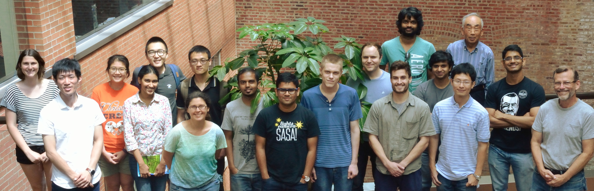
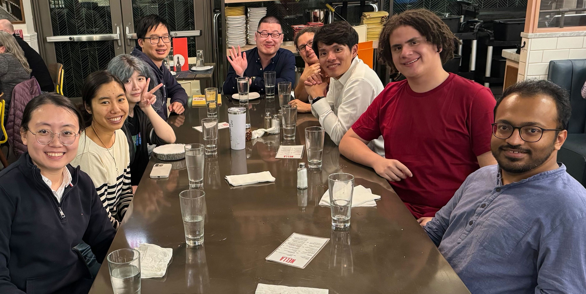
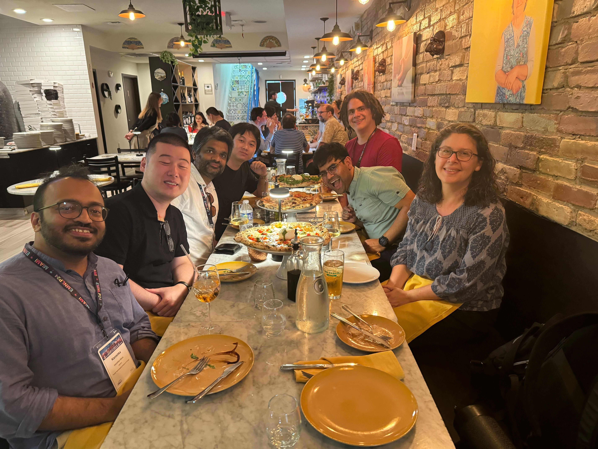

News
-
TTIC will be hosting a summer workshop on speech and audio foundation models, Sep. 4-5. Register for free (by Aug. 13) and/or submit your work (by Jul. 25) here.
-
Ph.D. alumna Freda Shi is now Assistant Professor at University of Waterloo. Congrats, Freda!
-
Karen Livescu has been named a 2025 IEEE Fellow for contributions to multi-view and pre-trained speech representation learning. Congrats, Karen!
-
Outstanding Paper Award at EMNLP 2024. Congrats to Kanishka and his collaborator Kyle Mahowald at UT Austin!
-
Best Paper Award at EMNLP 2024. Congrats to Karen and collaborators William Chen, Wangyou Zhang, Yifan Peng, Xinjian Li, Jinchuan Tian, Jiatong Shi, Xuankai Chang, Soumi Maiti, and Shinji Watanabe at CMU!
-
Marcelo Beramendi Caballero, Jiamin (Jessica) Yang, and Tianyang (Sally) Xu join as new Ph.D. students. Welcome, Marcelo, Jessica, and Sally!
-
Lingyu Gao, Freda Shi, and Davis Yoshida have graduated. In addition, Freda’s thesis was designated a Thesis of Distinction by TTIC. Congrats, all!
-
Kanishka Misra and Zhewei Sun join as new Research Assistant Professors. Welcome, Kanishka and Zhewei!
-
Outstanding Paper Award at ACL 2024. Congrats to TTIC student Davis Yoshida and former TTIC faculty Kevin Gimpel and Kartik Goyal
-
Jiawei (Joe) Zhou, Research Asssistant Professor 2023-24, has joined Stony Brook University as an Assistant Professor. Congrats, Joe!
-
Summer 2025
Fall 2024
Summer 2024